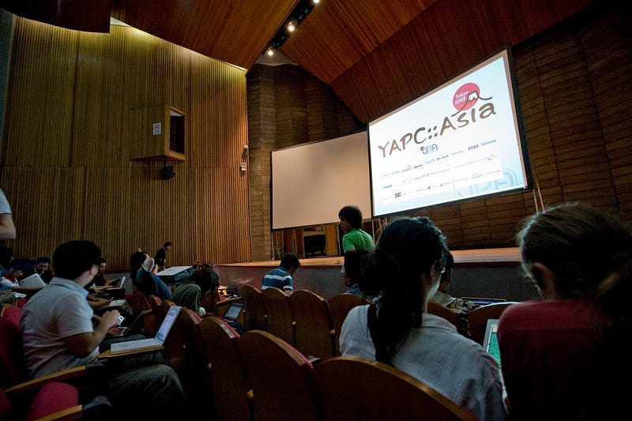
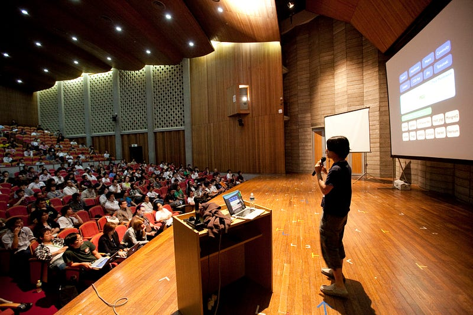

What Do You Want Your YAPC To Be?
What Do You Want Your YAPC To Be?
Or, “You Are Not Going Anywhere Unless You Know Where Your Goal Is”
Disclaimer
I am writing these articles because I have been asked to share my thoughts on YAPCs outside of YAPC::Asia. I don’t really mean to pick on other YAPCs (if I wanted to do that I would have done that a long time ago).
I have never been involved in a YAPC organizer group outside of YAPC::Asia Tokyo. So there are a lot of things that I’m assuming and guessing.
This article is based on things I have seen as an attendee of some YAPCs, and things that I have read or heard from others. If there are people who claim that my story is wrong, they are most likely correct.
TL;DR;
IMHO running a conference is about knowing what you want that conference to be. Having a vision/goal allows you to make better and more cohesive choices, which leads to a running better conference.
My Story

(c) Japan Perl Association
When I took over YAPC::Asia Tokyo 2009, I had a clear goal: I wanted the event to attract more people, and I wanted those people to be new people — people who have not necessarily been using Perl
In order to follow my goal of getting more people from non-Perl groups to participate, I ditched the idea of doing a “Perl-only event for Perl-enthusiasts” conference in the very early stages of being involved in the conference organization.
Sure, I wanted to promote Perl, but I thought that promoting Perl to the same people who had always been involved in the Perl community just did not seem like the best path to take. I thought — and I still believe this to be true — that running a strictly Perl-centric conference would be a dead end for Perl.

(c) Japan Perl Association
Based on this vision of mine, we started making many changes:
- We changed the Call For Papers abstract to read: “Talks need not be about Perl, but if we get two talks that look as interesting as the other, we will choose the one that talks about Perl. If your talk is not about Perl, we ask you that you include the word ‘perl’ in your talk a couple of times”
- Partially as a result of the previous item, we started receiving, and accepting, more talks about solutions rather than “how to build X in perl,” which seems dominant in other YAPCs.
- We started promoting YAPC to a much wider audience, by cooperating with tech magazine/websites such as 技術評論社 for articles, and placing promotional articles in places like CNET Japan, among others.
- …and many many more.
You may not agree with each of the items, but they were conscious choices to achieve our goal. We had good reasons for it. And when we do feel that we made mistakes on those choices, we can change it based on proper quantitative reasoning (“Is this helping us achieve our goal?”) rather than on a whim.
But wait, why would I run a YAPC and not necessarily focus on Perl? Answer: my intention was to promote Perl, the culture, and Perl, the community to the people that otherwise would have had no interest in Perl, as opposed to promoting Perl, the language.
I think I was able to sum up this direction in my Closing speech at YAPC::Asia Tokyo 2012:
* YAPC::Asia should be the most welcoming geek event: for anybody that wants to talk about tech.
* YAPC::Asia should be about tech, and the love for tech.
* YAPC::Asia should be a place to share a glimpse of this marvelous community
So YAPC::Asia Tokyo started shifting towards “an event for geeks of any area of expertise to share their knowledge, but with a bias towards Perl” starting from YAPC::Asia Tokyo 2009.
I think the shift became obvious around YAPC::Asia Tokyo 2011, and the shift has been completed as of YAPC::Asia Tokyo 2014 (“completed” as in, the rest of the world now recognizes YAPC::Asia to be “a fun place for all techies”, not “a place where all the Perl geeks go”)
YMMV, but I do believe that the goal that we set for YAPC::Asia is the correct approach to promote and let the the perl philosophy survive for the future, as well as to create a fun conference.
And I believe our initial goal to grow the conference has successfully been achieved: YAPC::Asia Tokyo 2009 gathered about 300+ people, but since then YAPC::Asia Tokyo has been the largest YAPC in the world for at least the last 4 years, and YAPC::Asia Tokyo 2014 gathered 1,300+ people, and the talk genre was broader than ever.
Your Story Need Not Be My Story, But…
So I explained why YAPC::Asia Tokyo has turned into what it is today, and that I believe our choices were good ones.
Having said this, I do not mean to tell that other YAPCs should/must follow suit, because what those YAPCs want to be might be completely different from what I wanted YAPC::Asia to be.
Instead, I’d like to ask this question: What do you want your YAPC to be?
I have visited a couple of YAPC::NAs. I have been watching how YAPC::EUs unfold, and have gotten information from people who have attended these YAPCs. One thing I noticed was that as an outsider to these events, I wasn’t quite sure who these events were catering to.
On one hand I hear people complaining that the event was only reaching a limited number of people (i.e. you wanted a broader audience but failed), and somewhere else a speaker was making fun of other language community in his talk (i.e. sounded like people in that talk wanted a relatively exclusive set of Perl enthusiasts to attend).
The websites are ambiguous, too. The site for YAPC::NA says
The conference celebrates the Perl programming language and is meant to be accessible to anyone, regardless of experience, yet valuable to even the most skilled of programmers.
Which sounds like they wanted to reach out to a wide variety of people, but at the same time I don’t think I saw a single attempt at marketing it outside of the Perl community.
So based on these contradicting actions, I am guessing that YAPC organizers just have not had the chance to formalize their visions and goals. Without a proper vision, you can’t prioritize your action items. Without a vision, you can’t allot funds for future investment. Without a vision, you can’t tell others what you want to do.
Again, I’m not saying they should have the same goals as YAPC::Asia, but the reason why YAPC::Asia has been so successful is because we knew what we wanted to do, and we have been faithfully enforcing policies that support that vision. This includes investments, like hiring a professional photographer in preparation for promoting our next YAPC.
The important thing is to decide, and share between the organizers what you want your YAPC to be. Everything else that comes with running a YAPC should be based on that fundamental vision.
So Tell Us What Your YAPC Is About!
Once you know your vision and your goals, it’s much easier to come up with a bullet list of items. Here are some of the things that I can think of off of my head that requires judgement based on your goals:
- Large conference? Small, exclusive conference?
- Should you limit the talk topics to Perl?
- To which channels do you want to promote your YAPC? Just Perl devs? Other language communities? Or somewhere else?
- Where do you want to concentrate your budget? Large or small venue? Pay for marketing? Pay for people flying in? Swags? Meal?
The vision for the event is really where all of the planning an preparation start. Without it you can’t decide … anything. Well you can, but your decisions would likely be based on adhoc-spur-of-the-moment reasons. I don’t really recommend it.
So for next year’s YAPCs, I look forward to see a more clear message from the organizers as to what their YAPCs are all about. Whichever direction is fine, as long as there is one.